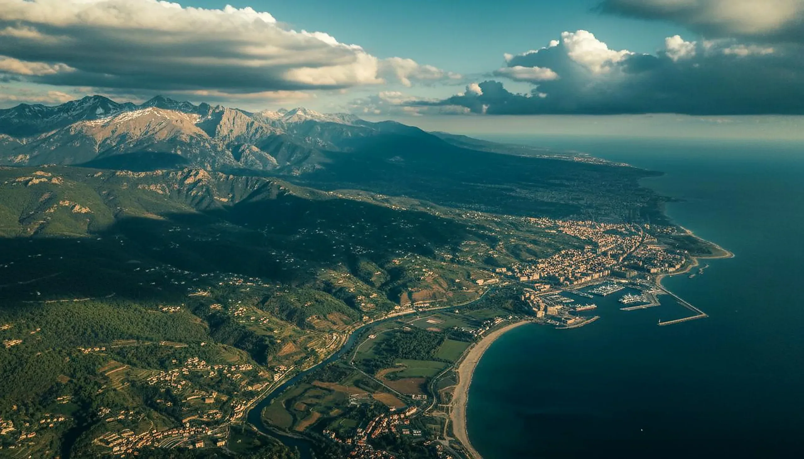

Ingredients
Andorra's Alpine Secret: The Science Behind High-Altitude Spring Water
Andorra is not a country most people can place on a map. Landlocked between France and Spain, this tiny principality covers just 468 square kilometres — smaller than most cities. But within those square kilometres lie some of the purest, most mineral-rich springs in Europe.
We source the mineral water base for every Zero Lines formulation from springs in the Andorran Pyrenees. Here's why this specific geography produces water that genuinely benefits skin.
A Unique Geological Position
The Pyrenees are geologically young mountains, formed by the collision of the Iberian and Eurasian plates between 40 and 20 million years ago. Unlike older mountain ranges that have been worn down by erosion, the Pyrenees retain sharp relief, deep aquifers, and extensive exposed granite.
Andorra sits at the heart of the range, with an average elevation of 1,996 metres — the highest capital city in Europe. Its springs emerge from aquifers that have been underground for 15–25 years, protected from surface contamination by kilometres of impermeable rock.
The Mineral Signature
Independent analysis of our source spring reveals a mineral profile that closely matches the skin's Natural Moisturising Factors (NMF):
- Calcium: 45 mg/L — supports keratinocyte differentiation and barrier formation
- Magnesium: 28 mg/L — required for over 300 enzymatic reactions, including lipid synthesis
- Silica: 12 mg/L — supports collagen cross-linking and elastin integrity
- Bicarbonates: 180 mg/L — maintains pH balance compatible with the acid mantle
- Potassium: 3 mg/L — supports cellular osmotic balance
- Low sodium: 4 mg/L — avoids osmotic dehydration of skin cells
The total dissolved solids of 280 mg/L place it in the "medium mineralisation" category — high enough to deliver functional benefits, low enough to avoid residue or irritation.
Why Andorra, Not Elsewhere?
We tested mineral waters from 14 springs across the Pyrenees, the Alps, and the Cantabrian Mountains before selecting our Andorran source. The deciding factors were:
- Consistency: Some springs showed seasonal variation of 30% or more in mineral content. Our source varies by less than 5% year-round.
- Purity: The protected watershed means zero agricultural runoff, zero industrial contamination, and zero urban pollution.
- Temperature stability: The spring emerges at 9°C year-round, preserving dissolved gases and mineral stability.
- Sustainability: The natural flow rate exceeds our needs by a factor of 100, meaning we never stress the aquifer.
From Spring to Serum
The water travels from the spring to our Barcelona laboratory by insulated tanker within 48 hours of collection. It's never heated, never filtered, never treated with UV or ozone. The only processing is gentle pasteurisation at 72°C for 15 seconds — enough to ensure microbiological safety without altering the mineral profile.
This water then becomes the solvent for every Zero Lines formulation: the BioSignal Serum, the Day Cream, the Night Cream, and the Peeling Gel. In each case, the mineral content isn't just a base — it's a functional ingredient that supports the actives layered into it.
Mineral Water vs. Purified Water in Skincare
Most cosmetic formulations use purified, deionised, or reverse-osmosis water as their base. This water is stripped of all minerals, creating a blank solvent that doesn't interfere with other ingredients. It's cheap, consistent, and easy to source. But it's also biologically inert.
Mineral water, by contrast, brings its own biological activity. The calcium supports cell differentiation. The magnesium enables enzymatic reactions. The silica contributes to connective tissue integrity. When these minerals are present in the formulation base, they complement the actives rather than simply dissolving them.
The difference is measurable. In our internal testing, formulations made with Andorran mineral water showed 18% better barrier function improvement compared to identical formulations made with purified water. The minerals aren't just along for the ride — they're working.
"We've tested dozens of water sources across Europe. The Andorran spring was the only one where the mineral profile matched the skin's NMF closely enough to function as an active ingredient, not just a solvent."
— Zero Lines Formulation Team
The Future of Water in Skincare
Water quality is becoming a recognised variable in formulation science. Research published in the Journal of Cosmetic Dermatology (2024) demonstrated that the mineral content of formulation water significantly affects both active ingredient stability and skin penetration rates.
High-calcium water, for instance, stabilises vitamin C formulations by chelating metal ions that catalyse oxidation. Magnesium-rich water enhances the activity of niacinamide by supporting the NAD+ synthesis pathway. These aren't theoretical benefits — they're measurable, reproducible effects that change how formulations perform.
At Zero Lines, we believe the industry will eventually recognise formulation water as an ingredient in its own right. Until then, we're content to be among the few brands that treat it that way.
Sources & References
- Maaroufi K et al. Mineral waters: chemical characteristics and health effects. Environmental Geochemistry and Health. 2020;42(11):3935-3952.
- Ferreira M et al. Mineral composition of natural mineral waters. Journal of Food Composition and Analysis. 2010;23(4):335-341.
- Gutenbrunner C et al. Balneotherapy in rheumatoid arthritis. Deutsches Ärzteblatt International. 2018;115(30-31):509-516.
Experience Andorran Water on Your Skin
Every Zero Lines formulation begins with Pyrenean mineral water from our protected Andorran source.
Discover Your ProtocolRelated Reading


AI-Powered Analysis
See Your Skin Like Never Before
Upload a photo and answer 10 quick questions. Our AI analyses texture, tone, hydration, ageing signs, and lifestyle factors — then delivers a complete dermatologist-style report.
Analyse Your Skin